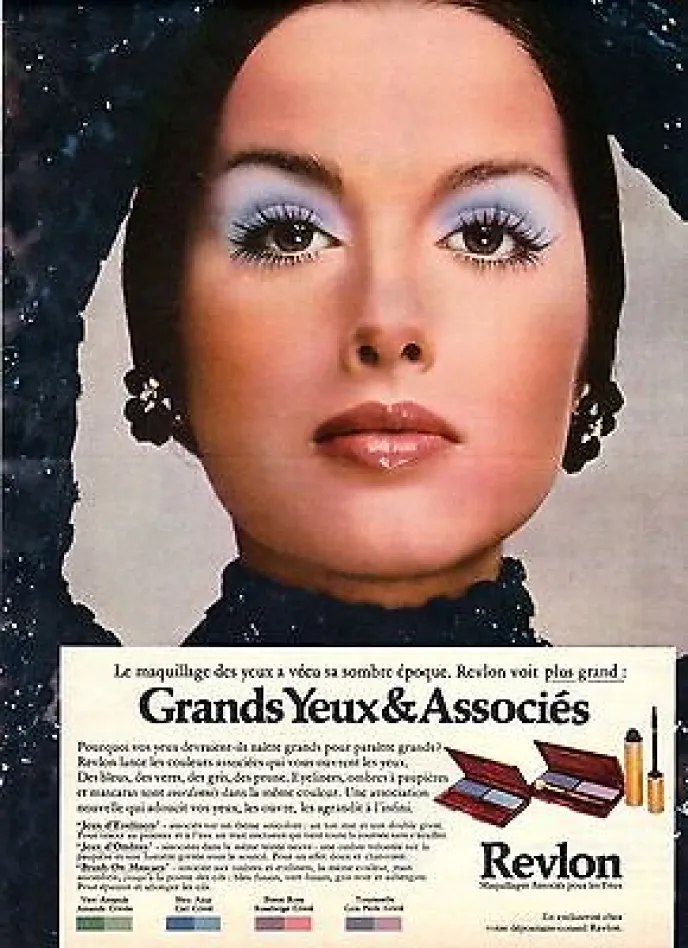
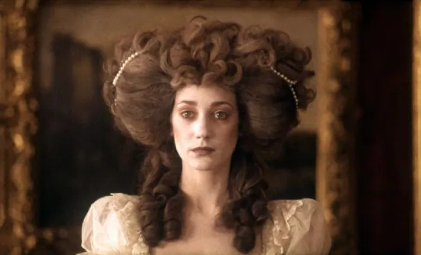
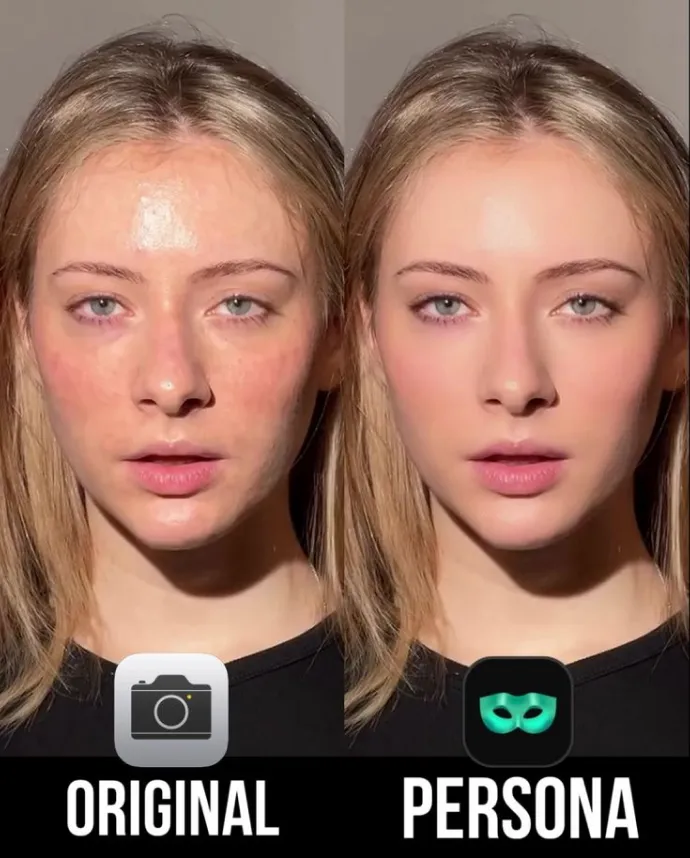

Barry Lyndon: Revolutionary cinematic precision
Discover how Kubrick's masterpiece, “Barry Lyndon”, laid the foundations for natural make-up in cinema, heralding the current era of virtual make-up.
By Alice Frelin - Reading Time : 2min
Published January 5, 2025 at 6:15 pm
Film still Barry Lyndon (1975)
A masterpiece of natural light
In the history of film make-up, Stanley Kubrick's “Barry Lyndon”, released in 1975, has revolutionized the art of make-up on screen. This film marked a turning point in the approach to make-up, prefiguring the era of virtual make-up and beauty filters we know today.
Kubrick, a notorious perfectionist, demanded make-up that was as natural as possible, anticipating the current trend towards "no-makeup makeup". This approach revolutionary for its time can be considered the prehistory of modern virtual make-up.
The director used innovative techniques for its time, such as lighting certain scenes exclusively by candlelight. This required a delicate make-up capable of sublimating the natural beauty of the actors in this soft light.
The usual '70s makeup :
Revlon© advertising poster (1970)
Make-up in the film:
Revlon© advertising poster (1970)
Cutting-edge technology
This authenticity research is a direct precursor to today's augmented reality filters, which aim to enhance appearance while maintaining a natural look.
The make-up in Barry Lyndon was so discreet as to seem non-existent, a feat that heralded the era when modifications are imperceptible but effective. This minimalist approach contrasts sharply with the practices of the time, when make-up was often heavy and visible.
Today, in the age of virtual make-up and digital technologies, Kubrick's approach seems prophetic. Today's technologies make it possible to achieve a natural, flawless look without the use of physical products, thus realizing Kubrick's vision of make-up invisible but transformative.
Before and after using a beauty filter - Persona App
Barry Lyndon reminds us that the quest for make-up natural is nothing new. This visionary film laid the foundations for an approach that, decades later, would find its apogee in the virtual make-up technologies we use today.
Watching this masterpiece today, one can't help but think that Kubrick had glimpsed the future of make-up: a subtle, almost invisible, but able to deeply transform on-screen appearance.